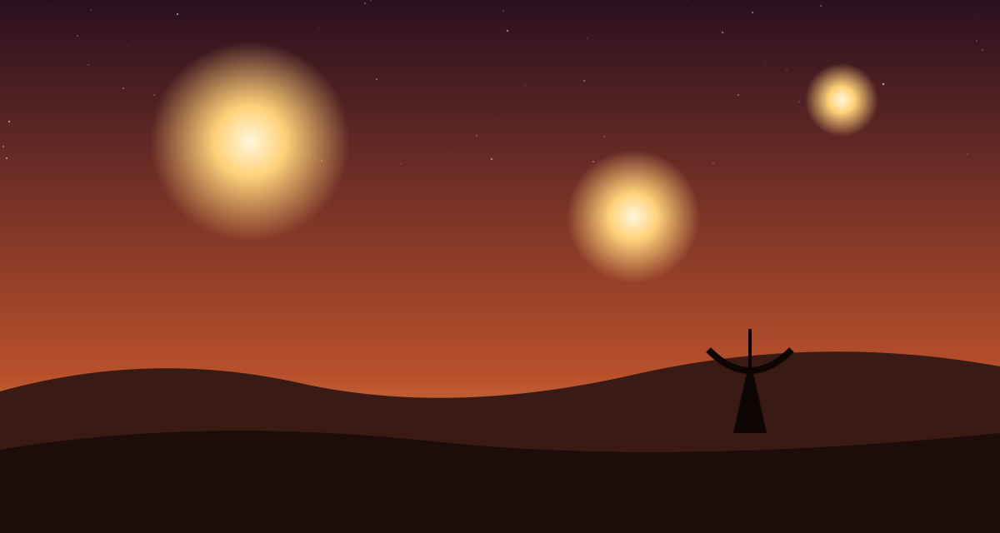

Задача трёх тел · глава 32 из 35
Трисолярис: Слушатель

Кратко
Действие переносится на Трисолярис. Одинокий слушатель на посту № 1379 принимает сигнал Земли — самообъясняющееся послание, отправленное Е Вэньцзе через Солнце. Он узнаёт о прекрасном, стабильном мире с одним солнцем. Понимая, что ответ Земли выдаст её расстояние и обречёт её, он из сострадания посылает предупреждение: «Не отвечайте!». Принцепс отпускает его, вместо того чтобы казнить, но приказывает обезводить и сжечь около шести тысяч человек, причастных к провалу, и отправляет первый флот примерно в сторону Земли.
Главные моменты
- Трисолярис изнутри: одинокий служащий в мире постоянного страха.
- «Не отвечайте!» — жест сострадания к чужой цивилизации.
- Массовая казнь как обычная мера наказания.
- Флот отправлен ещё до того, как Земля ответила.
Значение
Зеркало Е Вэньцзе: если она предала свой мир, отчаявшись в нём, то слушатель 1379 предал свой из любви к чужому. Двое людей разных цивилизаций принимают решения, которые определят судьбу обеих.
Наука в этой главе
- Молчание Вселенной и «Не отвечайте!» отчасти правда